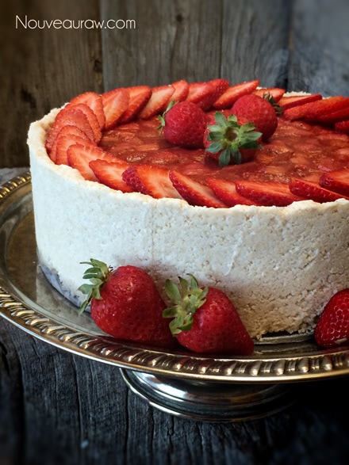

Ruby Red Strawberry Rhubarb Cream Parfaits

I have a confession to make… this recipe happened due to the slip of the hand. First, scroll down a tad to see the second photo. Beautiful right? Lovely, gorgeous, I think I admired that cake for about ten minutes straight.
Ka-Boom!
Not a sound that you want to hear in the kitchen. As I picked up the full-sized cheesecake from the counter, my eyes went in one direction, and the cake went the other, as it slid right off of the cake holder. ( I forgot to remove the base of the Springform pan, which made it slippery). I have been a bit clumsy lately, and this is the second pie that I have demolished, yet have turned it around into something beautiful. I am hoping not to make this a habit, though. hehe
Hold the Boat!
There it sat, in a beautiful heap of goodness. I was once again mesmerized by the vibrant colors of the cake that perched itself on the counter. Wait for a second, hold the boat! I shook my head as if it would correct my vision, and the cake would once again appear whole. MY CHEESECAKE!…. noooo!
I was tempted to grab a spoon and just eat the whole thing right off of the granite top. The things we think of when we feel defeated, huh?! hehe. It was then and there that the word “parfait” popped into my noggin. And thus, this creation was born.
So fine, make the cheesecake as a whole if you wish, or you can create a blissfully, magnificent dessert such as this :P The cool thing is that I am sharing down below, is how to make these beautiful single-serving desserts… I don’t expect you to make it whole and then dump it on your countertop. But if you are looking to liven things up a bit… go for it. :) Within the ingredient list, I stated that it would make 10-13 parfaits. That number is a rough estimate based on the size of the dishware that you use. I was able to pop out 13 of them. Enjoy, and have a glorious day! I would love to hear from you, so please comment below. P.S. I will be sharing how to make this cheesecake as a WHOLE. Hehe amie sue

Ingredients:
Yields 10-13 parfaits
Crust Crumble:
- 1 cup raw oat flour
- 3 1/3 cups shredded coconut
- 1/2 tsp Himalayan pink salt
- 1/2 cup water
- 1/2 cup coconut oil, melted
- 1/4 cup maple syrup
- 1/2 tsp vanilla extract
Rhubarb and strawberry layer:
Vanilla bean filling:
- 3 cups raw cashews, soaked 2+ hours
- 1 cup water
- 1/4 cup lemon juice
- 3/4 cup maple syrup
- 2 tsp vanilla extract
- 1/4 tsp Himalayan pink salt
- 3/4 cup coconut oil, melted
- 3 Tbsp sunflower lecithin, powder or liquid
Preparation:
Crust crumble:
- Combine the oats flour, shredded coconut, and salt in the food processor, fitted with the “S” blade. Process until it is well broken down and mixed.
- Add water, coconut oil, maple syrup, and vanilla. Process until the batter is well mixed and sticks together when pinched.
- Feel free to use any liquid sweetener you want.
- Set aside.
Rhubarb and strawberry layer:
- After making the Marinated Rhubarb and Strawberry, pour it into a mesh strainer to separate the juice of the marinade from the fruit. Place the fruit in a bowl and set aside.
Vanilla bean filling:
- Drain the soaked cashews and discard the soak water. Place in a high-speed blender.
- In the blender combine the; cashews, water, lemon juice, maple syrup, vanilla, and salt.
- Due to the volume and the creamy texture that we are going after, it is essential to use a high-powered blender. It could be too taxing on a lower-end model.
- Blend until the filling is creamy smooth. You shouldn’t detect any grit. If you do, keep blending.
- This process can take 2-4 minutes, depending on the strength of the blender. Keep your hand cupped around the base of the blender carafe to feel for warmth if the batter is getting too warm. Stop the machine and let it cool. Then proceed once cooled.
- With a vortex going in the blender, drizzle in the coconut oil, and then add the lecithin. Blend just long enough to incorporate everything together. Don’t over-process. The batter will start to thicken.
- What is a vortex? Look into the container from the top and slowly increase the speed from low to high, the batter will form a small vortex (or hole) in the center. High-powered machines have containers that are designed to create a controlled vortex, systematically folding ingredients back to the blades for smoother blends and faster processing… instead of just spinning ingredients around, hoping they find their way to the blades.
- If your machine isn’t powerful enough or built to do this, you may need to stop the unit often to scrape the sides down.
- Create the parfaits by layering the crust, fruit, and cheesecake filling.
- Store in the fridge for 3-5 days. Be sure that they are well covered to avoid fridge odors.
© AmieSue.com